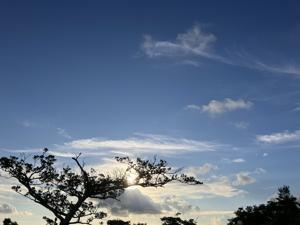
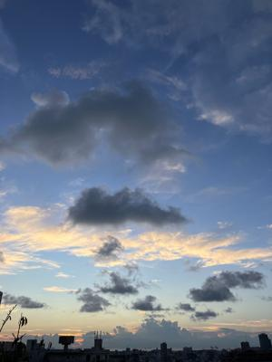

うるがいの話 ある日
最新: ６回目の県立病院【うるがいの話 ある日】とは 一日だけのプログです
『うるがいの話』の最新一日だけのプログで、通信料が少なく経済的だ。カニの画像をクリックすると全ての日付が載る『うるがいの話』サイトを表示します
|
|
【うるがいの話】 うるがい(ｳﾙｶﾞｲ urugai)とは、『もずくがに』の名前でとても大きくなります。 |
|---|---|
|
|
【カミマヤーの話】 猫のことを方言でマヤーといいます。カミマヤー（kamimayaa）とは、神の猫のことです。 |
|
【たながぁの音楽】 たながぁ（ﾀﾅｶﾞｰ tanagaa）とは手長えびのことで、何種類かあり大きいのは車 エビぐらいになります。 |

|
【ぶながぁの話】 ぶながぁ(ﾌﾞﾅｶﾞｰ bunagaa)とは、赤い髪の毛、赤い身体、そして身長は１ｍ２０ｃｍ ぐらい、川の蟹を食べているの目撃された。場所は沖縄県国頭郡大宜味村のと ある村僕の隣近所に住んでいる爺さんから、聞いた話です。 |
|
|
【ギーマの話】 ギーマ(giima)とは、山原の里山に咲くスズランに似た、 花を付けます。実は食べられます、 気が付くと口の周りが紫になっています。 |
2024年08月26日 (月）６回目の県立病院
17:25

今回で県立病院は終了、来月からはもとの病院で診察することになった。い
やいや、９時半に入り診察は１３時！。待ち時間がエライ長い。待ち時間対
応のため、お義母さんが写っている写真を、アイホンが利用できるＵＳＢメ
モリにいれ、待合室で２時間ほど見せる。その間は、元気なのだがそれ以上
は・・・・、やがて泣き出すのである。トイレへは数回、ハンカチが水っぽ
くなったので、私のハンカチを使う。

今年退職したもと同僚の本山から、仕事したいとショートメールが来た。今
病院なので、夕方連絡すると返信。夕方、１７時過ぎに連絡をしたらとらな
かった。マ、ね、どこか行っているのでしょう。私も、走って来るべ。
１７時２０分 ビットコインの総資産 ￥２６、６６６（↓８７）